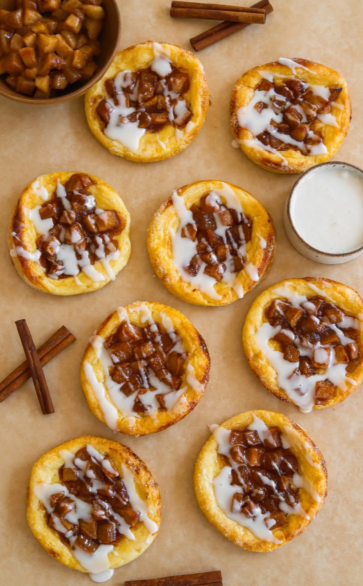

DESSERT
APPLE PIE DANISHES
PREP TIME: 40 MINUTES COOK TIME: 20 MINUTES
TOTAL TIME: 1 HOUR YIELDS: 8 TO 10 DANISHES
These apple cream cheese danishes taste like they came straight
from a bakery, but they're so easy to make at home! Flaky, buttery
puff pastry with a creamy layer of sweetened cream cheese and
tender cinnamon-spiced apples every bite is a dream. Perfect for
breakfast, dessert, or a cozy afternoon treat!
Jump To Recipe
DESSERT
APPLE PIE DANISHES
PREP TIME: 40 MINUTES COOK TIME: 20 MINUTES
TOTAL TIME: 1 HOUR YIELDS: 8 TO 10 DANISHES
These apple cream cheese danishes taste like they came straight
from a bakery, but they're so easy to make at home! Flaky, buttery
puff pastry with a creamy layer of sweetened cream cheese and
tender cinnamon-spiced apples every bite is a dream. Perfect for
breakfast, dessert, or a cozy afternoon treat!
INGREDIENTS
Apple Pie Filling
-
2 large Granny Smith apples, peeled and cubed
-
3 tablespoons unsalted butter
-
1/3 cup light brown sugar
-
1 1/4 teaspoon cinnamon
-
pinch of salt
-
1 teaspoon vanilla extract
-
1/2 tablespoon lemon juice
-
2 teaspoons cornstarch
-
1 tablespoon water